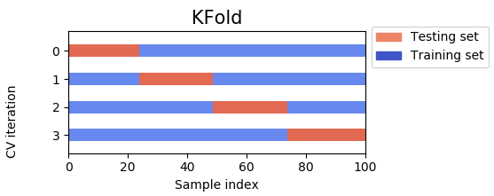
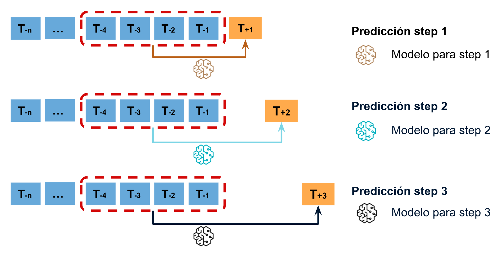

Time series forecasting is the task of predicting future values of a time series, i.e., a sequence of observations
taken sequentially in time. This is a very common task in many domains, such as finance, weather, retail, etc.
Time series forecasting is a type of regression problem in supervised learning, where the input features are
the previous values of the time series, and the target is the next value of the time series. The features of a
time series problem are called lags. For example, if we want to predict the value of a time series at time t,
we can use the values of the time series at times t-1, t-2, t-3, etc. as features.
However, in practice we can enrich the features of a time series problem by adding other features that are not
necessarily previous observations of the time series. For example, if we want to predict the price of a stock
at time t, we can use the price of the stock at time t-1, t-2, t-3, etc. as features, but we can also
use other features such as the price of other stocks, the weather, etc. In any case, the features of a time series
are naturally tabular data (and can be encoded in pandas DataFrames).
Note
The fact that the data is sequential in time means that we need to be careful when splitting the data into
training and test sets.
Pandas provides some basic tools for time series processing. Sometimes it's not necessary to embark on a
big time series forecasting project, and we can get away with some simple transformations of the data.
Pandas provides the following (simple) tools for time series processing:
shift: shifts the values of a time series by a given number of steps. This is useful to create lags of the
time series, i.e., to create features that are the previous values of the time series. For example, to create
a lag of 1 of a time series, we can do the following:
df['lag_1']=df['time_series'].shift(1)
diff: computes the difference between consecutive values of a time series. For example, to create a feature
that is the difference between the current value of the time series and the
previous value of the time series, we can do the following:
df['diff_1']=df['time_series'].diff(1)
rolling: computes a rolling statistic of a time series. For example, to compute the rolling mean (alternatively
known as moving average) of a time series for the last 3 observations, we can do the following:
The window parameter specifies the number of observations to use to compute the rolling statistic (it returns
NaN for the first window observations, where there are not enough observations to compute the rolling statistic).
It can be used with the mean(), as in the example above, but also with other functions such as sum(), min(),
max(), etc.
Note
For more advanced time series and signal processing, we can use the SciPy library
(and its scipy.signal module).
Unfortunately, Scikit Learn does not contain any of the classical time series models such as ARIMA, SARIMA, etc.
However, it does contain some tools that can be useful for time series forecasting, such as the TimeSeriesSplit,
and some generalist models that can be used for time series forecasting, such as the RandomForestRegressor.
When splitting time series data into training and test sets, we need to be careful to respect the time order of the
data. We cannot shuffle the data before a split, as we would do with regular tabular data, because the time order
of the data is important. The reason is that in time series forecasting we need to predict the future values of
the time series using only the past values of the time series, since this is what we will have access to in
practice.
Note
This is easily seen with an example: predicting the price of an asset for next Monday, using information
from the previous Sunday and the Tuesday after said Monday is much easier than predicting Monday's price
using only information from the past; also, in practice we will not have access to data from the future :)
In practice, we can split the data ourselves using the iloc (if we are working with pandas DataFrames),
or if we are using numpy arrays, we can just use the slicing operator []:
That was only the time series features. What is the target? The target is the time series shifted one step
into the future. Assume that our time series is in the column time_series of the DataFrame df, and that
n_train is the number of observations in the training set. Then, the target is:
As just discussed, we need to be careful when splitting time series data into training and test sets.
TimeSeriesSplit is a Scikit Learn cross-validation strategy that is useful for time series data. It is similar to the
KFold strategy, but it differs in that the training data in each fold always comes before the test data.

Regular K-fold cross validation.
Time series split cross validation.
We can use the TimeSeriesSplit with the cross_val_score function to perform cross-validation on time series
data:
fromsklearn.model_selectionimportcross_val_score,TimeSeriesSplitX=...# Features, that include the time series from the pasty=...# Target, that is the time series shifted one step into the futuretscv=TimeSeriesSplit(n_splits=5)cross_val_score(model,X,y,cv=tscv)
We can also use the TimeSeriesSplit with the GridSearchCV and RandomizedSearchCV functions in a similar
way:
As mentioned before, Scikit Learn does not contain any of the classical time series models, but
we can nonetheless use a RandomForestRegressor to perform time series forecasting. When training models
for time series, we always have two options to choose from:
Recursive multi-step forecasting: in this case, we train a model to predict the next value of the time series
given the previous values of the time series. Then, we use the model to predict the next value of the time series,
and we use this prediction to predict the next value of the time series, and so on. This option has the advantage
that we only need to train one model, but it has the disadvantage that we have no control over how the errors
propagate over time.
Recursive multistep prediction diagram.
Direct multi-step forecasting: in this case, we train n different models to predict the next
n values of the time series.

Direct multistep prediction diagram.
The RandomForestRegressor is a good choice for time series forecasting because it can handle time series
data, but can also handle other types of features to enrich the model. Sometimes, ARIMA models can even be
used to generate features for a RandomForestRegressor model.
Time series transformation including an exogenous variable. The letter feature
represents a feature that is not a lag of the time series.
Note
Other tree-based models such as XGBoost and CatBoost can also be used for time series forecasting with
extra ("exogenous") variables.
Note
Alternatives to the RandomForestRegressor for time series forecasting are the boosted trees from
external libraries such as XGBoost or CatBoost. Neural networks are starting to be used for time series
forecasting as well, but they are not yet as popular as the previous options (and require much more data
to perform reasonably well).